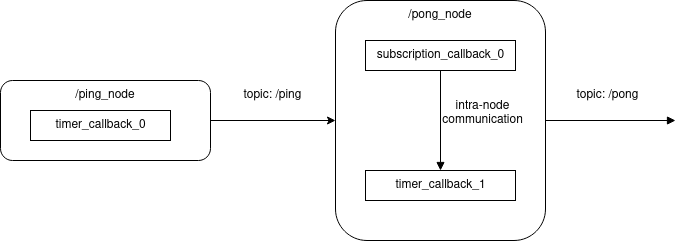
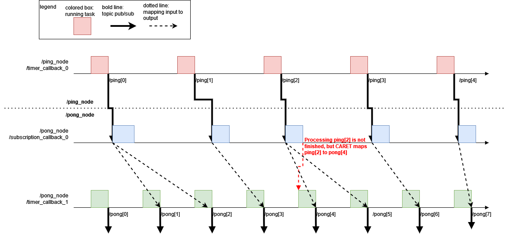
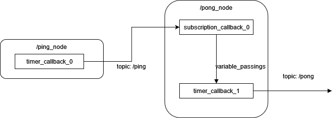
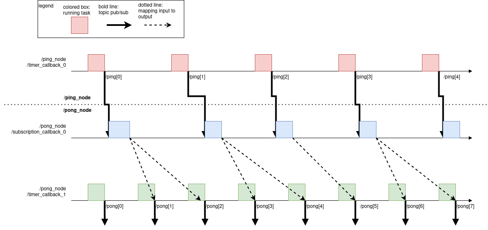

How to define intra-node data path#
In the previous section, you learned how to define inter-node data path. CARET can calculate response time for a simple path using only inter-node data path definition. However, when a target application or path becomes complicated, intra-node-data path needs to be defined as well as inter-node data path.
CARET assume that intra-node data path is mapping of topic subscription and publish in a node. This is not defined simply because the definition depends on implementation.
This section will explain how to find which intra-node data path you have to define, and how to define it.
Find which intra-node data path to define#
Before defining intra-node data path, you have to check whether latency of the target path is calculable. This can be checked with Path.verify() method as the following sample code shows.
arch = Architecture('yaml', '/path/to/architecture.yaml')
path = arch.get_path('target_path')
path.verify()
Here, path.verify() returns True if path latency for path is calculable. Otherwise, you will confront with warning messages as shown below.
Example 1.
WARNING : 2021-12-20 19:14:03 | Detected "message_contest is None". Correct these node_path definitions.
To see node definition and procedure,execute :
>> check_procedure('yaml', '/path/to/yaml', arch, '/message_driven_node')
message_context: null
node: /message_driven_node
publish_topic_name: /topic3
subscribe_topic_name: /topic2
WARNING : 2021-12-20 19:14:03 | Detected "message_contest is None". Correct these node_path definitions.
To see node definition and procedure,execute :
>> check_procedure('yaml', '/path/to/yaml', arch, '/timer_driven_node')
message_context: null
node: /timer_driven_node
publish_topic_name: /topic4
subscribe_topic_name: /topic3
Example 2.
WARNING : 2022-03-18 12:53:54 | 'caret/rclcpp' may not be used in subscriber of '/topic/name'.
On the sample warning message of Example 1, /message_driven_node and /timer_driven_node have undefined intra-node data path. You will add the intra-node data path in next step.
On the other message, Example 2, the node which subscribes /topic/name topic has not compiled with caret/rclcpp.
Please check here.
Message Context#
CARET assumes that node latency is defined as duration from subscription time to publish time. The definition looks simple, but node latency is difficult to define mechanically because some nodes have multiple inputs or multiple outputs.
CARET require users to define message_context to calculate node latency. One of the following policies is acceptable for message_context.
use_latest_messagecallback_chain
They have different capability to measure node latency, and the selected message_context policy decides how to calculate node latency. However, message_context is a little difficult for CARET beginners without any example. The subsequence section introduces an example issue before explaining the policies.
These two policies are not enough to cover the arbitrary node latency, and some implementations have node latency that cannot be measured. For example, message filter is currently unable to measure.
Example issue#
An example issue on /ping_node and /pong_node is given as the below figure shows.

Next items are explaining /ping_node and /pong_node.
/ping_node- it transmit messages of
/pingtopic to/pong_node - it is composed of a single callback function
- it transmit messages of
/pong_node- it transmits message of
/pongtopic to another node - it is composed of two callback functions;
subscription_callback_0andtimer_callback_1 - it receives messages of
/pingtopic from/pong_nodeviasubscription_callback_0 subscription_callback_0shares messages/pingtopic withtimer_callback_1via shared variabletimer_callback_1produces/pongwith the shared messagestimer_callback_1runs about 8/5 as frequent astimer_callback_0
- it transmits message of
CARET is concerned which input topic message is mapped to an output message. message_context is provided to map input messages to output messages.
use_latest_message#
With use_latest_message policy, CARET will map a most recent input message to output message. CARET focuses on input and output,but is not concerned structure of node structure. The next figure shows how CARET defines node latency with use_latest_message in the example issue.

In the figure, latest messages of ping topic is mapped to messages of /pong topic mechanically by CARET. It is not still easy to understand with only the block figure, but the provided timing chart below help you to understand what use_latest_message is.

In the timing chart, colored boxes represent duration of callback running, and bold lines are message flow of topic message. Dotted lines indicates mapping between input messages and outputs. With use_latest_message, CARET assumes that output message is made from the most recent input message. use_latest_message is fairly simple and works well in most cases.
In the timing chart, red dotted lines explains a pitfall of use_latest_message. Using use_latest_message policy, CARET believes that input message, which is not even processed completely, is mapped to output message. For example, CARET interprets that /pong[4] is made from /ping[2] because /ping[2] is the recent input message for /pong[4]. However, subscription_callback_0 is processing /ping[2] and does not share it with timer_callback_1 before publishing /pong[4]. You have to tell CARET the node structure when you find such pitfall.
callback_chain#
callback_chain is introduced for CARET to map input messages to outputs based on inter-operation of multiple callback functions. Input messages are consumed in subscription callbacks and propagated to other nodes. It looks as if input messages passes chains of multiple callbacks to make output messages. With callback_chain, CARET take care of input propagation on callbacks and it is helpful to escape the limitation of use_latest_message as mentioned above.
Next figure shows how CARET interprets intra-node data path using callback_chain. Intra-communication between subscription_callback_0 and timer_callback_1 is taken into account for defining intra-node data path. variable_passings is a tag used in CARET, and represents such intra-communication.

The following timing chart shows how input messages are mapped to output messages.

CARET maps mechanically messages of /pong topic to messages of /ping which finish being processed on subscription_callback_0. The unexpected behavior of use_latest_message is improved by callback_chain.
callback_chain looks the best choice. However, it has several drawbacks.
- It is not designed for node which have multiple callbacks running at parallel, and response time might be longer than actual
- It is not able to detect actual time when buffered data are consumed because only CARET does not trace user code on ROS 2
- Users are expected to know node structure beforehand
Info
use_latest_message and callback_chain do not cover all of use cases for CARET. We, CARET development team, continue improvements of intra-node data path definition.
Python API#
Python API is not implemented so far. Python API support is planned in 2023.
Architecture file editing#
This section explain how to add intra-node data path definition with editing an architecture file. The example issue above is used for explanation.
use_latest_message#
Next sample description is required for using use_latest_message on an architecture file. use_latest_message is applied to /pong_node in the next sample description. Essential description is extracted in the following snippet, but you will confront with busy YAML file actually rather than the sample.
You have to add use_latest_message as context_types between targeted subscription and publisher.
- node_name: /pong_node
callbacks:
- callback_name: subscription_callback_0
- callback_name: timer_callback_1
publishes:
- topic_name: /pong
callback_names:
- timer_callback_1 # manually added
subscribes:
- topic_name: /ping
callback_name: subscription_callback_0
message_contexts:
- context_type: use_latest_message # manually added
subscription_topic_name: /ping
publisher_topic_name: /pong
callback_chain#
On the other hand, CARET requires users to provide the following description if you apply callback_chain to /pong_node.
- node_name: /pong_node
callbacks:
- callback_name: subscription_callback_0
- callback_name: timer_callback_1
variable_passings:
- callback_name_write: subscription_callback_0 # manually added
callback_name_read: timer_callback_1 # manually added
publishes:
- topic_name: /ping
callback_names:
- timer_callback_1 # manually added
subscribes:
- topic_name: /pong
callback_name: timer_callback_1
message_contexts:
- context_type: callback_chain # manually added
subscription_topic_name: /pong
publisher_topic_name: /ping
User have to fill callback name in variable_passings, publishes's callback_name. context_type must be set as callback_chain.
After editing, use path.verify() described in the beginning of this section to verify that it has been set correctly.